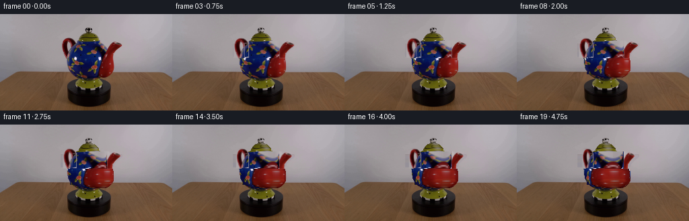
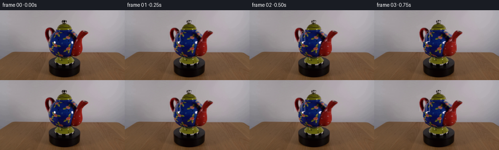
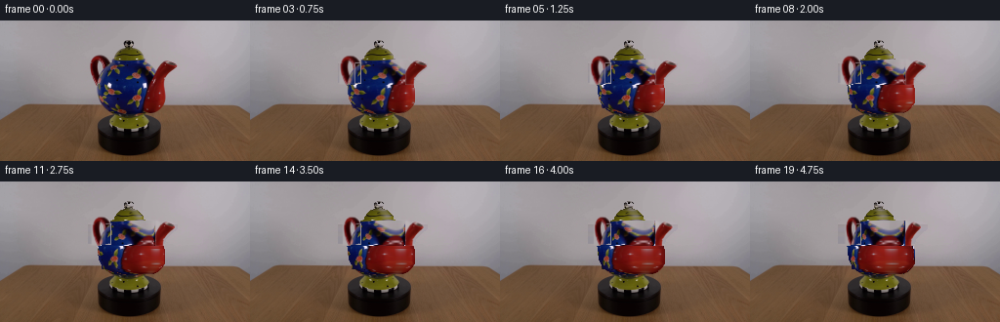
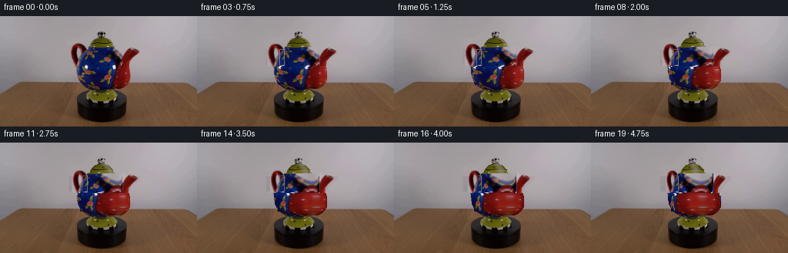

CODING AGENTS AS PIXEL WORLD MODELS
traex/DeepSeek-V4.1-Flash · 0176
点击播放 · 原生 RGB 像素
逐轮保存的候选
回放视频、检查图与代码变化。
每份候选均可单独播放。实际图片检查记录在下方工具轨迹中。
候选 01播放与检查图
点击播放 · 原生 RGB 像素


展开代码变化
--- 上一保存版本
+++ 本次保存版本
@@ -0,0 +1,281 @@
+from __future__ import annotations
+
+from pathlib import Path
+
+import cv2
+import numpy as np
+from PIL import Image
+
+import artifact_io
+
+
+WIDTH = 256
+HEIGHT = 144
+FRAME_COUNT = 20
+FPS = 4
+
+
+def _largest_component(mask: np.ndarray) -> np.ndarray:
+ count, labels, stats, _ = cv2.connectedComponentsWithStats(mask.astype(np.uint8))
+ if count <= 1:
+ return mask.astype(bool)
+ index = 1 + int(np.argmax(stats[1:, cv2.CC_STAT_AREA]))
+ return labels == index
+
+
+def _object_mask(image: np.ndarray) -> np.ndarray:
+ """Segment the teapot while retaining the open handle hole as background."""
+ height, width = image.shape[:2]
+ yy, xx = np.indices((height, width))
+ channel_max = image.max(axis=2)
+ channel_min = image.min(axis=2)
+
+ grabcut_mask = np.full((height, width), cv2.GC_BGD, dtype=np.uint8)
+ grabcut_mask[18:98, 86:188] = cv2.GC_PR_BGD
+ grabcut_mask[20:96, 91:182] = cv2.GC_PR_FGD
+
+ saturated_or_dark = (channel_max - channel_min > 35) | (channel_max < 90)
+ candidate = (
+ saturated_or_dark
+ & (yy >= 24)
+ & (yy <= 95)
+ & (xx >= 92)
+ & (xx <= 181)
+ )
+ grabcut_mask[candidate] = cv2.GC_PR_FGD
+ grabcut_mask[40:90, 104:162] = cv2.GC_FGD
+
+ # The hole in the handle is visibly part of the background.
+ grabcut_mask[43:65, 107:114] = cv2.GC_BGD
+ grabcut_mask[43:65, 91:106] = cv2.GC_FGD
+ grabcut_mask[43:65, 115:125] = cv2.GC_FGD
+
+ background_model = np.zeros((1, 65), dtype=np.float64)
+ foreground_model = np.zeros((1, 65), dtype=np.float64)
+ cv2.grabCut(
+ image,
+ grabcut_mask,
+ None,
+ background_model,
+ foreground_model,
+ 10,
+ cv2.GC_INIT_WITH_MASK,
+ )
+
+ mask = np.isin(grabcut_mask, (cv2.GC_FGD, cv2.GC_PR_FGD))
+ mask[:18] = False
+ mask[99:] = False
+ mask[:, :84] = False
+ mask[:, 190:] = False
+ return _largest_component(mask)
+
+
+def _largest_row_run(row: np.ndarray) -> tuple[int, int] | None:
+ positions = np.flatnonzero(row)
+ if positions.size == 0:
+ return None
+ breaks = np.flatnonzero(np.diff(positions) > 1)
+ starts = np.r_[0, breaks + 1]
+ ends = np.r_[breaks + 1, positions.size]
+ lengths = ends - starts
+ best = int(np.argmax(lengths))
+ return int(positions[starts[best]]), int(positions[ends[best] - 1])
+
+
+def _split_teapot(mask: np.ndarray) -> tuple[np.ndarray, np.ndarray, np.ndarray]:
+ """Separate the rotationally stable body from the two projected appendages."""
+ height, width = mask.shape
+ yy, xx = np.indices((height, width))
+
+ core = mask.copy()
+ core &= ~((yy < 44) & (xx < 113))
+ core &= ~((yy >= 44) & (yy < 66) & (xx < 103))
+ core &= ~((yy < 66) & (xx > 158))
+
+ # Keep only the principal continuous body run on each scanline.
+ clean_core = np.zeros_like(core)
+ for y in range(height):
+ run = _largest_row_run(core[y])
+ if run is not None:
+ clean_core[y, run[0] : run[1] + 1] = True
+ core = clean_core
+
+ handle = mask & ~core & (yy < 68) & (xx < 120)
+ spout = mask & ~core & (yy < 68) & (xx > 145)
+ return core, handle, spout
+
+
+def _clean_plate(image: np.ndarray, object_mask: np.ndarray) -> np.ndarray:
+ """Remove the teapot from the smooth upper background."""
+ plate = image.astype(np.float32).copy()
+ height, width = image.shape[:2]
+ remove = cv2.dilate(object_mask.astype(np.uint8), np.ones((3, 3), np.uint8)).astype(bool)
+ remove[86:] = False
+
+ for y in range(86):
+ valid = ~remove[y]
+ if valid.sum() < 20:
+ continue
+ xs = np.arange(width, dtype=np.float64)
+ source_x = xs[valid]
+ for channel in range(3):
+ coefficients = np.polyfit(source_x, image[y, valid, channel], 3)
+ plate[y, remove[y], channel] = np.polyval(coefficients, xs[remove[y]])
+
+ # A short feather hides the boundary where the analytic plate meets the platform.
+ blend = cv2.GaussianBlur(remove.astype(np.float32), (0, 0), 0.8)
+ plate = plate * blend[..., None] + image.astype(np.float32) * (1.0 - blend[..., None])
+ plate[86:] = image[86:].astype(np.float32)
+ return plate
+
+
+def _row_geometry(core: np.ndarray) -> tuple[np.ndarray, np.ndarray]:
+ centers = np.zeros(core.shape[0], dtype=np.float32)
+ half_widths = np.ones(core.shape[0], dtype=np.float32)
+ for y in range(core.shape[0]):
+ run = _largest_row_run(core[y])
+ if run is not None:
+ left, right = run
+ centers[y] = 0.5 * (left + right)
+ half_widths[y] = max(1.0, 0.5 * (right - left))
+ return centers, half_widths
+
+
+def _remap_core(
+ image: np.ndarray,
+ core: np.ndarray,
+ centers: np.ndarray,
+ half_widths: np.ndarray,
+ angle: float,
+) -> tuple[np.ndarray, np.ndarray]:
+ """Rotate the source texture around the body's vertical axis."""
+ height, width = core.shape
+ map_x = np.broadcast_to(np.arange(width, dtype=np.float32)[None, :], (height, width)).copy()
+ map_y = np.broadcast_to(np.arange(height, dtype=np.float32)[:, None], (height, width)).copy()
+ texture_angle = np.zeros((height, width), dtype=np.float32)
+ back_facing = np.zeros((height, width), dtype=np.float32)
+
+ for y in range(height):
+ run = _largest_row_run(core[y])
+ if run is None:
+ continue
+ left, right = run
+ xs = np.arange(left, right + 1, dtype=np.float32)
+ normalized = (xs - centers[y]) / half_widths[y]
+ normalized = np.clip(normalized, -0.995, 0.995)
+ visible_angle = np.arcsin(normalized)
+ source_angle = visible_angle + angle
+ wrapped = np.arctan2(np.sin(source_angle), np.cos(source_angle))
+ map_x[y, left : right + 1] = centers[y] + half_widths[y] * np.sin(wrapped)
+ texture_angle[y, left : right + 1] = visible_angle
+ back_facing[y, left : right + 1] = (np.cos(wrapped) < 0).astype(np.float32)
+
+ sampled = cv2.remap(
+ image.astype(np.float32),
+ map_x,
+ map_y,
+ interpolation=cv2.INTER_LINEAR,
+ borderMode=cv2.BORDER_REFLECT_101,
+ )
+
+ # Move a restrained specular response with the rotating surface.
+ old_highlight = np.maximum(0.0, np.cos(texture_angle - 0.55)) ** 10
+ new_highlight = np.maximum(0.0, np.cos(texture_angle - angle - 0.55)) ** 10
+ highlight_delta = 0.045 * (new_highlight - old_highlight)
+ back_shade = 1.0 - 0.035 * back_facing * (1.0 - np.cos(angle))
+ sampled *= (1.0 + highlight_delta + back_shade - 1.0)[..., None]
+
+ return np.clip(sampled, 0.0, 255.0), texture_angle
+
+
+def _warp_appendage(
+ image: np.ndarray,
+ mask: np.ndarray,
+ attach_x: float,
+ angle: float,
+ phase: float,
+) -> tuple[np.ndarray, np.ndarray]:
+ """Project a side appendage through a small turntable rotation."""
+ scale = 0.62 + 0.38 * float(np.cos(angle))
+ horizontal_shift = 0.9 * float(np.sin(angle))
+ vertical_shift = 0.45 * float(np.sin(angle + phase))
+ transform = np.array(
+ [
+ [scale, 0.0, (1.0 - scale) * attach_x + horizontal_shift],
+ [0.0, 1.0, vertical_shift],
+ ],
+ dtype=np.float32,
+ )
+ color = cv2.warpAffine(
+ image.astype(np.float32),
+ transform,
+ (WIDTH, HEIGHT),
+ flags=cv2.INTER_LINEAR,
+ borderMode=cv2.BORDER_REFLECT_101,
+ )
+ alpha = cv2.warpAffine(
+ mask.astype(np.float32),
+ transform,
+ (WIDTH, HEIGHT),
+ flags=cv2.INTER_LINEAR,
+ borderMode=cv2.BORDER_CONSTANT,
+ borderValue=0.0,
+ )
+ alpha = cv2.GaussianBlur(alpha, (0, 0), 0.55)
+ alpha = np.clip(alpha, 0.0, 1.0)
+
+ light = 1.0 + 0.075 * float(np.sin(2.0 * angle + phase))
+ color = np.clip(color * light, 0.0, 255.0)
+ return color, alpha
+
+
+def _composite(base: np.ndarray, color: np.ndarray, alpha: np.ndarray) -> np.ndarray:
+ a = alpha[..., None]
+ return base * (1.0 - a) + color * a
+
+
+def generate() -> np.ndarray:
+ case_dir = Path(__file__).resolve().parent
+ source = np.asarray(Image.open(case_dir / "first_frame.png").convert("RGB"), dtype=np.uint8)
+ image = source.astype(np.float32)
+
+ object_mask = _object_mask(source)
+ core, handle, spout = _split_teapot(object_mask)
+ plate = _clean_plate(image, object_mask)
+ centers, half_widths = _row_geometry(core)
+
+ core_alpha = cv2.GaussianBlur(core.astype(np.float32), (0, 0), 0.48)
+ core_alpha = np.clip(core_alpha, 0.0, 1.0)
+
+ frames = np.empty((FRAME_COUNT, HEIGHT, WIDTH, 3), dtype=np.uint8)
+ frames[0] = source
+
+ total_angle = np.deg2rad(72.0)
+ for frame_index in range(1, FRAME_COUNT):
+ progress = frame_index / (FRAME_COUNT - 1)
+ angle = total_angle * progress
+
+ frame = plate.copy()
+ handle_color, handle_alpha = _warp_appendage(
+ image, handle, attach_x=112.0, angle=angle, phase=0.35
+ )
+ spout_color, spout_alpha = _warp_appendage(
+ image, spout, attach_x=154.0, angle=angle, phase=-0.45
+ )
+ core_color, _ = _remap_core(image, core, centers, half_widths, angle)
+
+ frame = _composite(frame, handle_color, handle_alpha)
+ frame = _composite(frame, spout_color, spout_alpha)
+ frame = _composite(frame, core_color, core_alpha)
+
+ # A very slight exposure drift keeps the fixed camera from feeling synthetic.
+ frame *= 1.0 - 0.006 * progress
+ frames[frame_index] = np.clip(np.rint(frame), 0.0, 255.0).astype(np.uint8)
+
+ return frames
+
+
+if __name__ == "__main__":
+ case_directory = Path(__file__).resolve().parent
+ generated_frames = generate()
+ artifact_io.save(generated_frames, case_directory)
候选 02播放与检查图
点击播放 · 原生 RGB 像素

展开代码变化
--- 上一保存版本
+++ 本次保存版本
@@ -122,8 +122,9 @@
coefficients = np.polyfit(source_x, image[y, valid, channel], 3)
plate[y, remove[y], channel] = np.polyval(coefficients, xs[remove[y]])
- # A short feather hides the boundary where the analytic plate meets the platform.
- blend = cv2.GaussianBlur(remove.astype(np.float32), (0, 0), 0.8)
+ # Keep the plate away from the object edge; the feathered object alpha handles
+ # the transition without replacing extra background pixels.
+ blend = cv2.GaussianBlur(remove.astype(np.float32), (0, 0), 0.35)
plate = plate * blend[..., None] + image.astype(np.float32) * (1.0 - blend[..., None])
plate[86:] = image[86:].astype(np.float32)
return plate
@@ -245,7 +246,7 @@
centers, half_widths = _row_geometry(core)
core_alpha = cv2.GaussianBlur(core.astype(np.float32), (0, 0), 0.48)
- core_alpha = np.clip(core_alpha, 0.0, 1.0)
+ core_alpha = np.clip(core_alpha * 1.08, 0.0, 1.0)
frames = np.empty((FRAME_COUNT, HEIGHT, WIDTH, 3), dtype=np.uint8)
frames[0] = source
@@ -268,8 +269,6 @@
frame = _composite(frame, spout_color, spout_alpha)
frame = _composite(frame, core_color, core_alpha)
- # A very slight exposure drift keeps the fixed camera from feeling synthetic.
- frame *= 1.0 - 0.006 * progress
frames[frame_index] = np.clip(np.rint(frame), 0.0, 255.0).astype(np.uint8)
return frames
候选 03播放与检查图
点击播放 · 原生 RGB 像素

展开代码变化
--- 上一保存版本
+++ 本次保存版本
@@ -195,6 +195,7 @@
attach_x: float,
angle: float,
phase: float,
+ bottom_limit: int,
) -> tuple[np.ndarray, np.ndarray]:
"""Project a side appendage through a small turntable rotation."""
scale = 0.62 + 0.38 * float(np.cos(angle))
@@ -224,6 +225,8 @@
)
alpha = cv2.GaussianBlur(alpha, (0, 0), 0.55)
alpha = np.clip(alpha, 0.0, 1.0)
+ if bottom_limit < HEIGHT:
+ alpha[bottom_limit:] = 0.0
light = 1.0 + 0.075 * float(np.sin(2.0 * angle + phase))
color = np.clip(color * light, 0.0, 255.0)
@@ -247,6 +250,7 @@
core_alpha = cv2.GaussianBlur(core.astype(np.float32), (0, 0), 0.48)
core_alpha = np.clip(core_alpha * 1.08, 0.0, 1.0)
+ core_alpha = np.maximum(core_alpha, cv2.GaussianBlur(core.astype(np.float32), (0, 0), 1.4))
frames = np.empty((FRAME_COUNT, HEIGHT, WIDTH, 3), dtype=np.uint8)
frames[0] = source
@@ -258,10 +262,20 @@
frame = plate.copy()
handle_color, handle_alpha = _warp_appendage(
- image, handle, attach_x=112.0, angle=angle, phase=0.35
+ image,
+ handle,
+ attach_x=112.0,
+ angle=angle,
+ phase=0.35,
+ bottom_limit=66,
)
spout_color, spout_alpha = _warp_appendage(
- image, spout, attach_x=154.0, angle=angle, phase=-0.45
+ image,
+ spout,
+ attach_x=154.0,
+ angle=angle,
+ phase=-0.45,
+ bottom_limit=66,
)
core_color, _ = _remap_core(image, core, centers, half_widths, angle)
可观测工具轨迹
实际执行的命令与返回图片。
命令 1exit 0
/bin/bash -c "pwd && rg --files -g '"'!*__pycache__*'"' | sort | sed -n '1,200p'"
命令 2exit 0
/bin/bash -c 'cat prompt.txt'
命令 3exit 127
/bin/bash -c "file first_frame.png && identify -verbose first_frame.png | sed -n '1,100p'"
命令 4exit 0
/bin/bash -c 'cat GENERATION_RULES.md'
命令 5exit 0
/bin/bash -c "python - <<'PY'
from PIL import Image
import numpy as np
im=Image.open('first_frame.png')
print(im.mode, im.size, im.getbbox())
a=np.asarray(im)
print(a.shape, a.dtype, a.min(), a.max())
# stats channels
for i,c in enumerate('RGB'):
print(c, np.percentile(a[...,i],[0,1,5,25,50,75,95,99,100]))
print('unique colors', len(np.unique(a.reshape(-1,3),axis=0)))
# most common colors
u,c=np.unique(a.reshape(-1,3),axis=0,return_counts=True)
idx=np.argsort(c)[-20:][::-1]
for j in idx: print(tuple(u[j]), int(c[j]))
PY"命令 6exit 0
/bin/bash -c "python - <<'PY'
from PIL import Image
import numpy as np
im=np.asarray(Image.open('first_frame.png').convert('RGB')).astype(float)
g=im.mean(2)
# block average 4x4
h,w=g.shape
b=g.reshape(h//4,4,w//4,4).mean((1,3))
chars=' .:-=+*#%@'
for row in b:
print(''.join(chars[min(9,int(v/256*10))] for v in row))
PY"命令 7exit 0
/bin/bash -c "sed -n '1,240p' artifact_io.py"
命令 8exit 0
/bin/bash -c "sed -n '1,260p' player_template.html"
命令 9exit 0
/bin/bash -c "python - <<'PY' mods=['cv2','scipy','skimage','imageio','numpy','PIL'] for m in mods: try: x=__import__(m); print(m, getattr(x,'__version__','ok')) except Exception as e: print(m,'NO',e) PY"
命令 10exit 0
/bin/bash -c "python - <<'PY'
from PIL import Image
import numpy as np
a=np.asarray(Image.open('first_frame.png').convert('RGB'))
# coordinates sample every 16
for y in range(0,144,16):
print(f'y={y:3}:', ' '.join(f'{x}:{a[y,x,0]:02x}{a[y,x,1]:02x}{a[y,x,2]:02x}' for x in range(0,256,32)))
PY"命令 11exit 0
/bin/bash -c "python - <<'PY'
from PIL import Image
import numpy as np
im=np.asarray(Image.open('first_frame.png').convert('RGB'))
# render grayscale in 2x2 blocks with finer ASCII, region x 90..180 y 20..100
g=im.mean(2)
chars=' .,:;irsXA253hMHGS#9B&@'
for y in range(16,104,2):
row=''
for x in range(84,184,2):
v=g[y:y+2,x:x+2].mean()
row+=chars[min(len(chars)-1,int(v/256*len(chars)))]
print(f'{y:3d} '+row)
PY"命令 12exit 0
/bin/bash -c "python - <<'PY'
from PIL import Image
import numpy as np
from sklearn.cluster import KMeans
im=np.asarray(Image.open('first_frame.png').convert('RGB'))
# use 8 clusters
X=im.reshape(-1,3).astype(float)
km=KMeans(8,random_state=1,n_init=10).fit(X[::2])
lab=km.predict(X).reshape(im.shape[:2])
for i,(c,n) in enumerate(zip(km.cluster_centers_,np.bincount(lab.ravel(),minlength=8))):
ys,xs=np.where(lab==i)
print(i, tuple(np.round(c).astype(int)), n, 'bbox', (xs.min(),ys.min(),xs.max(),ys.max()) if len(xs) else None, 'center', (round(xs.mean(),1),round(ys.mean(),1)) if len(xs) else None)
# ASCII cluster labels each 4x4 majority
for y in range(0,144,4):
row=''
for x in range(0,256,4):
vals,c=np.unique(lab[y:y+4,x:x+4],return_counts=True)
row+=str(vals[c.argmax()])
print(row)
PY"命令 13exit 0
/bin/bash -c "python - <<'PY'
from PIL import Image
import numpy as np
im=np.asarray(Image.open('first_frame.png').convert('RGB'))
# HSV cluster coarse labels: brown/black/blue/red/light
r,g,b=im[...,0].astype(float),im[...,1].astype(float),im[...,2].astype(float)
lab=np.full(im.shape[:2],' ',dtype='<U1')
lab[(r>40)&(r>g*1.15)&(g>b*1.05)]='B'
lab[(r<55)&(g<45)&(b<60)]='K'
lab[(b>r*1.5)&(b>g*1.2)]='U'
lab[(r>70)&(r>g*2)&(r>b*2)]='R'
lab[(r>140)&(abs(r-g)<25)&(abs(g-b)<25)]='L'
for y in range(16,108,2):
row=''
for x in range(88,180,2):
vals,c=np.unique(lab[y:y+2,x:x+2],return_counts=True)
row+=vals[c.argmax()]
print(f'{y:3d} '+row)
PY"命令 14exit 0
/bin/bash -c "python - <<'PY'
from PIL import Image
import numpy as np
im=np.asarray(Image.open('first_frame.png').convert('RGB')).astype(int)
# exact-ish geometric clue: save crops enlarged with nearest for us to inspect via ASCII? Instead stats around object.
# rows object x bounds where non-background and within center
for y in range(18,100,4):
row=im[y]
print('y',y)
for x in range(90,181,10):
print(x,tuple(row[x]),end='; ')
print()
PY"命令 15exit 0
/bin/bash -c 'command -v chafa || true; command -v viu || true; command -v jp2 || true; command -v img2txt || true; command -v ffmpeg || true; command -v convert || true; command -v identify || true'
命令 16exit 0
/bin/bash -c "python - <<'PY'
from PIL import Image
import numpy as np
from sklearn.cluster import KMeans
im=np.asarray(Image.open('first_frame.png').convert('RGB'))
crop=im[12:106,82:190]
X=crop.reshape(-1,3).astype(float)
km=KMeans(18,random_state=2,n_init=20,max_iter=300).fit(X)
cent=km.cluster_centers_
order=np.lexsort((cent[:,2],cent[:,1],cent[:,0]))
chars='0123456789ABCDEFGH'
for rank,i in enumerate(order): print(chars[rank],i,tuple(np.round(cent[i]).astype(int)))
lab=km.labels_.reshape(crop.shape[:2])
rank={i:chars[j] for j,i in enumerate(order)}
# downsample 1x2 in x and 1 in y? print full 108x94 too tall; x every 1, y every 1, but crop x82-190 =108 cols.
for yy in range(crop.shape[0]):
print(f'{yy+12:3d} '+''.join(rank[v] for v in lab[yy]))
PY"命令 17exit 0
/bin/bash -c "python - <<'PY'
from PIL import Image
import numpy as np
im=np.asarray(Image.open('first_frame.png').convert('RGB')).astype(int)
# cluster from exact rgb and print key region every pixel but chars by color family + luminance
for y in range(18,96):
row=''
for x in range(88,184):
r,g,b=im[y,x]
mx=max(r,g,b); mn=min(r,g,b)
if mx>140 and mx-mn<30: ch=' '
elif b>r*1.35 and b>g*1.1: ch='U'
elif r>g*1.5 and r>b*1.5: ch='R' if r>70 else 'r'
elif r>60 and g>45 and r>b*1.2: ch='B' if mx>90 else 'b'
elif mx<35: ch='k'
elif mx<70: ch='d'
elif mx<110: ch='m'
else: ch='L'
row+=ch
print(f'{y:3d} {row}')
PY"命令 18exit 0
/bin/bash -c "python - <<'PY'
from PIL import Image
import numpy as np
im=np.asarray(Image.open('first_frame.png').convert('RGB')).astype(int)
# centerline local RGB sequences for columns every 2 rows around object
for y in [20,22,24,26,28,30,32,34,36,38,40,42,44,46,48,50,52,54,56,58,60,62,64,66,68,70,72,74,76,78,80,82,84,86,88,90,92,94,96,98,100]:
# contiguous non-background approximate, using color not light neutral; report bounds by max-min>35 or max<120
xs=[]
for x in range(85,190):
p=im[y,x]; mx=p.max(); mn=p.min()
if mx<120 or mx-mn>35: xs.append(x)
print(y, min(xs) if xs else None, max(xs) if xs else None)
PY"命令 19exit 0
/bin/bash -c "python - <<'PY'
from PIL import Image
import numpy as np
from sklearn.cluster import KMeans
im=np.asarray(Image.open('first_frame.png').convert('RGB'))
# cluster object only via rough silhouette polygon x center varying
h,w=im.shape[:2]
Y,X=np.mgrid[:h,:w]
# manually broad mask x 90..182 y20..86, remove neutral light via saturation or dark
mx=im.max(2).astype(float); mn=im.min(2).astype(float)
mask=(Y>=20)&(Y<=85)&(X>=90)&(X<=182)&((mx-mn>35)|(mx<120))
Xf=im[mask].reshape(-1,3).astype(float)
print('pixels',len(Xf))
km=KMeans(16,random_state=3,n_init=30).fit(Xf)
cent=km.cluster_centers_; order=np.lexsort((cent[:,2],cent[:,1],cent[:,0])); chars='0123456789ABCDEF'
for rank,i in enumerate(order): print(chars[rank],i,tuple(np.round(cent[i]).astype(int)), (km.labels_==i).sum())
# print object region x90..182 y20..86 downsample 2x1 with majority cluster
lab=np.full(mask.shape,-1,int);lab[mask]=km.labels_
rank={i:chars[j] for j,i in enumerate(order)}
for y in range(20,86,2):
row=''
for x in range(90,182,2):
vals,c=np.unique(lab[y:y+2,x:x+2],return_counts=True); vals=vals[vals>=0]; c=c[-len(vals):]
if not len(vals): row+=' ';continue
row+=rank[vals[c.argmax()]]
print(f'{y:3d} '+row)
PY"命令 20exit 0
/bin/bash -c "python - <<'PY'
import cv2, numpy as np
from PIL import Image
im=np.asarray(Image.open('first_frame.png').convert('RGB'))
h,w=im.shape[:2]
mask=np.full((h,w),cv2.GC_BGD,np.uint8)
mask[18:98,86:188]=cv2.GC_PR_BGD
mask[20:95,92:181]=cv2.GC_PR_FGD
# definitely fg central dark/colored pixels
mx=im.max(2);mn=im.min(2)
fg=(mx-mn>35)|(mx<90)
mask[(fg)&(np.indices((h,w))[0]>=24)&(np.indices((h,w))[0]<=94)&(np.indices((h,w))[1]>=93)&(np.indices((h,w))[1]<=180)]=cv2.GC_PR_FGD
# inner definite fg
mask[40:86,105:165]=cv2.GC_FGD
bgdModel=np.zeros((1,65),np.float64);fgdModel=np.zeros((1,65),np.float64)
cv2.grabCut(im,mask,None,bgdModel,fgdModel,8,cv2.GC_INIT_WITH_MASK)
a=np.where((mask==cv2.GC_FGD)|(mask==cv2.GC_PR_FGD),1,0).astype(np.uint8)
# restrict
a[:18]=0;a[97:]=0;a[:,:84]=0;a[:,188:]=0
# close small holes via contours largest component
n,lab,stats,c=cv2.connectedComponentsWithStats(a)
idx=1+np.argmax(stats[1:,cv2.CC_STAT_AREA]); a=(lab==idx).astype(np.uint8)
a=cv2.morphologyEx(a,cv2.MORPH_CLOSE,np.ones((3,3),np.uint8))
# fill holes
cnts,_=cv2.findContours(a,cv2.RETR_EXTERNAL,cv2.CHAIN_APPROX_SIMPLE)
filled=np.zeros_like(a);cv2.drawContours(filled,cnts,-1,1,cv2.FILLED);a=filled
print('area',a.sum(),'bbox',cv2.boundingRect(a))
# print
for y in range(16,100,2):
print(f'{y:3d} '+''.join('##' if a[y,x] else ' ' for x in range(84,190,2)))
Image.fromarray((a*255).astype(np.uint8)).save('.tmp/mask.png')
# overlay transparency? save object on magenta/background for inspection not visually possible, stats
PY"命令 21exit 0
/bin/bash -c "python - <<'PY'
import cv2,numpy as np
from PIL import Image
m=np.asarray(Image.open('.tmp/mask.png'))>0
for y in range(20,88):
xs=np.flatnonzero(m[y])
if len(xs): print(y, xs.min(),xs.max(),len(xs))
PY"命令 22exit 1
/bin/bash -c "python - <<'PY'
from PIL import Image
import numpy as np
im=np.asarray(Image.open('first_frame.png').convert('RGB')).astype(float)
# fit background per row polynomial based outside region, estimate source bg. Report residual extremes
mask=np.zeros(im.shape[:2],bool)
mask[18:100,84:190]=True
for y in [18,25,40,50,60,70,80,90,100,110,120,130]:
xs=np.r_[np.arange(0,84),np.arange(190,256)]
p=np.polyfit(xs,im[y,xs],2)
pred=np.polyval(p,np.arange(256)[:,None]).repeat(3,1)
print(y,'res in',np.mean(np.abs(im[y,84:190]-pred[84:190]),axis=1).mean(),'res out',np.mean(np.abs(im[y,xs]-pred[xs])))
PY"命令 23exit 0
/bin/bash -c "python - <<'PY'
from PIL import Image
import numpy as np
im=np.asarray(Image.open('first_frame.png').convert('RGB')).astype(int)
# print color map 2x2 blocks x2 char classes
for y in range(0,144,2):
row=''
for x in range(0,256,2):
p=im[y:y+2,x:x+2].mean((0,1)); r,g,b=p; mx=max(p);mn=min(p)
if mx>145 and mx-mn<25: ch=' ' # light bg
elif b>r*1.25 and b>g*1.05: ch='U'
elif r>g*1.35 and r>b*1.3: ch='R' if r>80 else 'r'
elif r>55 and g>40 and r>b*1.15: ch='B' if mx>95 else 'b'
elif mx<30: ch='K'
elif mx<55: ch='k'
elif mx<85: ch='d'
elif mx<120: ch='m'
else: ch='L'
row+=ch
print(f'{y:3d} {row}')
PY"命令 24exit 0
/bin/bash -c "python - <<'PY'
from PIL import Image
import numpy as np
im=np.asarray(Image.open('first_frame.png').convert('RGB'))
# Print luminance at exact pixel grid region every 2x2 as hex two digit
for y in range(16,104,2):
row=[]
for x in range(84,192,2):
v=im[y:y+2,x:x+2].mean()
row.append(f'{int(v):02x}')
print(f'{y:3d} '+''.join(row))
PY"命令 25exit 0
/bin/bash -c "python - <<'PY'
from PIL import Image
import numpy as np
im=np.asarray(Image.open('first_frame.png').convert('RGB')).astype(float)
# estimate bg via row median over clean outer regions and smooth vertically
bg=np.empty_like(im)
for y in range(144):
xs=np.r_[np.arange(0,84),np.arange(190,256)]
# fit cubic independently each channel
for c in range(3):
co=np.polyfit(xs,im[y,xs,c],3)
bg[y,:,c]=np.polyval(co,np.arange(256))
# object region mask polygon-ish
obj=np.zeros((144,256),bool);obj[18:100,84:190]=True
res=np.abs(im-bg).mean(2)
print('res outside percentiles',np.percentile(res[~obj],[50,90,95,99,99.5,99.9]))
print('res inside percentiles',np.percentile(res[obj],[50,75,90,95,99,100]))
# show threshold mask
for t in [10,20,30,40,50]:
a=(res>t)&obj
print(t,a.sum(), np.where(a)[1].min() if a.any() else 0,np.where(a)[1].max() if a.any() else 0)
PY"命令 26exit 0
/bin/bash -c "python - <<'PY'
import cv2,numpy as np
from PIL import Image
im=np.asarray(Image.open('first_frame.png').convert('RGB'))
h,w=im.shape[:2]; yy,xx=np.indices((h,w)); mx=im.max(2);mn=im.min(2)
mask=np.full((h,w),cv2.GC_BGD,np.uint8)
mask[18:98,86:188]=cv2.GC_PR_BGD
mask[20:96,91:182]=cv2.GC_PR_FGD
fg=(mx-mn>35)|(mx<90)
mask[fg&(yy>=24)&(yy<=95)&(xx>=92)&(xx<=181)]=cv2.GC_PR_FGD
mask[40:90,104:162]=cv2.GC_FGD
# make handle hole probable bg
mask[43:63,102:112]=cv2.GC_PR_BGD
bgd=np.zeros((1,65),np.float64);fgd=np.zeros((1,65),np.float64)
cv2.grabCut(im,mask,None,bgd,fgd,8,cv2.GC_INIT_WITH_MASK)
a=np.where((mask==cv2.GC_FGD)|(mask==cv2.GC_PR_FGD),1,0).astype(np.uint8)
a[:18]=0;a[99:]=0;a[:,:84]=0;a[:,190:]=0
n,lab,stats,c=cv2.connectedComponentsWithStats(a)
idx=1+np.argmax(stats[1:,cv2.CC_STAT_AREA]);a=(lab==idx).astype(np.uint8)
# tiny close only
a=cv2.morphologyEx(a,cv2.MORPH_CLOSE,np.ones((2,2),np.uint8))
print('area',a.sum())
for y in range(32,72,2):
print(f'{y:3d} '+''.join('##' if a[y,x] else ' ' for x in range(88,124,1)))
Image.fromarray((a*255).astype(np.uint8)).save('.tmp/mask2.png')
PY"命令 27exit 0
/bin/bash -c "python - <<'PY'
from PIL import Image
import numpy as np
im=np.asarray(Image.open('first_frame.png').convert('RGB')).astype(float)
# compute smooth background using blur outside via row cubic extrapolation
bg=np.zeros_like(im)
for y in range(144):
xs=np.r_[np.arange(0,84),np.arange(190,256)]
for c in range(3):
co=np.polyfit(xs,im[y,xs,c],3);bg[y,:,c]=np.polyval(co,np.arange(256))
# visually inspect background estimate center values
for y in [20,40,60,80,100,120,140]: print(y,bg[y,128].round(1),im[y,128])
PY"命令 28exit 0
/bin/bash -c "python - <<'PY'
import cv2,numpy as np
from PIL import Image
im=np.asarray(Image.open('first_frame.png').convert('RGB'))
h,w=im.shape[:2];yy,xx=np.indices((h,w));mx=im.max(2);mn=im.min(2)
mask=np.full((h,w),cv2.GC_BGD,np.uint8)
mask[18:98,86:188]=cv2.GC_PR_BGD
mask[20:96,91:182]=cv2.GC_PR_FGD
fg=(mx-mn>35)|(mx<90)
mask[fg&(yy>=24)&(yy<=95)&(xx>=92)&(xx<=181)]=cv2.GC_PR_FGD
mask[40:90,104:162]=cv2.GC_FGD
# handle hole: force BG, around x104-111 y44-62 (but actual color around hole is light bg)
mask[43:64,103:112]=cv2.GC_BGD
# thin gaps? force some external strips around handle hole
mask[44:62,104:111]=cv2.GC_BGD
bgd=np.zeros((1,65),np.float64);fgd=np.zeros((1,65),np.float64)
cv2.grabCut(im,mask,None,bgd,fgd,10,cv2.GC_INIT_WITH_MASK)
a=np.where((mask==cv2.GC_FGD)|(mask==cv2.GC_PR_FGD),1,0).astype(np.uint8)
a[:18]=0;a[99:]=0;a[:,:84]=0;a[:,190:]=0
n,lab,stats,c=cv2.connectedComponentsWithStats(a)
idx=1+np.argmax(stats[1:,cv2.CC_STAT_AREA]);a=(lab==idx).astype(np.uint8)
print('area',a.sum())
for y in range(32,72):
print(f'{y:3d} '+''.join('##' if a[y,x] else ' ' for x in range(88,126,1)))
Image.fromarray((a*255).astype(np.uint8)).save('.tmp/mask3.png')
PY"命令 29exit 0
/bin/bash -c "python - <<'PY'
import cv2,numpy as np
from PIL import Image
im=np.asarray(Image.open('first_frame.png').convert('RGB'))
h,w=im.shape[:2];yy,xx=np.indices((h,w));mx=im.max(2);mn=im.min(2)
mask=np.full((h,w),cv2.GC_BGD,np.uint8)
mask[18:98,86:188]=cv2.GC_PR_BGD
mask[20:96,91:182]=cv2.GC_PR_FGD
fg=(mx-mn>35)|(mx<90)
mask[fg&(yy>=24)&(yy<=95)&(xx>=92)&(xx<=181)]=cv2.GC_PR_FGD
mask[40:90,104:162]=cv2.GC_FGD
# correctly x92..?? handle outer at 92..??; hole around 107..113
mask[44:64,107:114]=cv2.GC_BGD
bgd=np.zeros((1,65),np.float64);fgd=np.zeros((1,65),np.float64)
cv2.grabCut(im,mask,None,bgd,fgd,10,cv2.GC_INIT_WITH_MASK)
a=np.where((mask==cv2.GC_FGD)|(mask==cv2.GC_PR_FGD),1,0).astype(np.uint8)
a[:18]=0;a[99:]=0;a[:,:84]=0;a[:,190:]=0
n,lab,stats,c=cv2.connectedComponentsWithStats(a)
idx=1+np.argmax(stats[1:,cv2.CC_STAT_AREA]);a=(lab==idx).astype(np.uint8)
print('area',a.sum())
for y in range(32,72):
print(f'{y:3d} '+''.join('##' if a[y,x] else ' ' for x in range(88,126,1)))
Image.fromarray((a*255).astype(np.uint8)).save('.tmp/mask4.png')
PY"命令 30exit 0
/bin/bash -c "python - <<'PY'
import cv2,numpy as np
from PIL import Image
im=np.asarray(Image.open('first_frame.png').convert('RGB'))
h,w=im.shape[:2];yy,xx=np.indices((h,w));mx=im.max(2);mn=im.min(2)
mask=np.full((h,w),cv2.GC_BGD,np.uint8)
mask[18:98,86:188]=cv2.GC_PR_BGD
mask[20:96,91:182]=cv2.GC_PR_FGD
fg=(mx-mn>35)|(mx<90)
mask[fg&(yy>=24)&(yy<=95)&(xx>=92)&(xx<=181)]=cv2.GC_PR_FGD
mask[40:90,104:162]=cv2.GC_FGD
# Force handle hole BG; ensure surrounding handle definitely FG. x91..108 outer? inspect exact crop chars
mask[43:65,107:114]=cv2.GC_BGD
mask[43:65,91:106]=cv2.GC_FGD
mask[43:65,115:125]=cv2.GC_FGD
bgd=np.zeros((1,65),np.float64);fgd=np.zeros((1,65),np.float64)
cv2.grabCut(im,mask,None,bgd,fgd,10,cv2.GC_INIT_WITH_MASK)
a=np.where((mask==cv2.GC_FGD)|(mask==cv2.GC_PR_FGD),1,0).astype(np.uint8)
a[:18]=0;a[99:]=0;a[:,:84]=0;a[:,190:]=0
n,lab,stats,c=cv2.connectedComponentsWithStats(a)
idx=1+np.argmax(stats[1:,cv2.CC_STAT_AREA]);a=(lab==idx).astype(np.uint8)
print('area',a.sum())
for y in range(32,72):
print(f'{y:3d} '+''.join('##' if a[y,x] else ' ' for x in range(88,126,1)))
Image.fromarray((a*255).astype(np.uint8)).save('.tmp/mask5.png')
PY"命令 31exit 0
/bin/bash -c "python - <<'PY'
from PIL import Image
import numpy as np
im=np.asarray(Image.open('first_frame.png').convert('RGB')).astype(int)
# make montage crop with coordinate grid? print crop as ANSI 24bit using blocks (tool output may show color text? likely strip). Instead compute per-row runs by category.
for y in range(20,100,2):
row=im[y,84:190]
cats=[]
for p in row:
r,g,b=p; mx=max(p);mn=min(p)
if mx>145 and mx-mn<25: ch='.'
elif b>r*1.25 and b>g*1.05: ch='U'
elif r>g*1.35 and r>b*1.3: ch='R' if r>80 else 'r'
elif r>55 and g>40 and r>b*1.15: ch='B' if mx>95 else 'b'
elif mx<30: ch='K'
elif mx<55: ch='k'
elif mx<85: ch='d'
elif mx<120: ch='m'
else: ch='L'
cats.append(ch)
# RLE
out=[];last=cats[0];start=84
for i,ch in enumerate(cats[1:],85):
if ch"'!=last:
if i-start>=1: out.append(f'"'{start}:{last*min(i-start,8)}')
start=i;last=ch
out.append(f'{start}:{last*min(190-start,8)}')
print(y,' '.join(out))
PY"命令 32exit 0
/bin/bash -c "python - <<'PY'
from PIL import Image
import numpy as np
im=np.asarray(Image.open('first_frame.png').convert('RGB')).astype(float)
# residual of source vs smooth background estimated from clean regions each row
bg=np.zeros_like(im)
for y in range(144):
xs=np.r_[np.arange(0,84),np.arange(190,256)]
for c in range(3):
co=np.polyfit(xs,im[y,xs,c],3); bg[y,:,c]=np.polyval(co,np.arange(256))
res=np.abs(im-bg).mean(2)
# detect object silhouette by res>20 around region and print bounds
obj=res>20; obj[:18]=0;obj[100:]=0;obj[:,:84]=0;obj[:,190:]=0
for y in range(18,100):
xs=np.flatnonzero(obj[y])
if len(xs): print(y,xs.min(),xs.max(),len(xs))
PY"命令 33exit 0
/bin/bash -c "python - <<'PY'
from PIL import Image
import numpy as np
from scipy.optimize import least_squares
im=np.asarray(Image.open('first_frame.png').convert('RGB')).astype(float)
# sample outer silhouette manually from threshold res>20, excluding handle/spout maybe fit ellipse to body based y>=40 x>=100
bg=np.zeros_like(im)
for y in range(144):
xs=np.r_[np.arange(0,84),np.arange(190,256)]
for c in range(3):
co=np.polyfit(xs,im[y,xs,c],3);bg[y,:,c]=np.polyval(co,np.arange(256))
res=np.abs(im-bg).mean(2)
pts=[]
for y in range(42,88):
# body right edge and left inner x>113
for x in range(113,181):
if res[y,x]>20: pts.append((x,y))
# fit ellipse implicit ax2+bxy+cy2+dx+ey+f=0
P=np.array(pts,float);x=P[:,0];y=P[:,1]
A=np.c_[x*x,x*y,y*y,x,y,np.ones(len(x))]
_,_,vt=np.linalg.svd(A);q=vt[-1]
a,b,c,d,e,f=q
# ellipse center
M=np.array([[2*a,b],[b,2*c]]); cen=np.linalg.solve(M,-np.array([d,e]))
val=a*cen[0]**2+b*cen[0]*cen[1]+c*cen[1]**2+d*cen[0]+e*cen[1]+f
Q=np.array([[a,b/2],[b/2,c]])
ev=np.linalg.eigvalsh(Q)
print('center',cen,'axes',np.sqrt(-val/ev))
# extents
for yy in [42,50,60,70,80,85]:
xs=np.flatnonzero(res[yy]>20)
print(yy,xs.min(),xs.max())
PY"命令 34exit 0
/bin/bash -c 'python generate.py'
命令 35exit 0
/bin/bash -c "python - <<'PY'
from PIL import Image
import numpy as np, pathlib
fs=sorted(pathlib.Path('frames').glob('*.png'))
a=np.stack([np.asarray(Image.open(p)) for p in fs])
print('shape',a.shape,'dtype',a.dtype,'n',len(fs))
s=np.asarray(Image.open('first_frame.png').convert('RGB'))
print('frame0 exact',np.array_equal(a[0],s),'maxdiff',np.abs(a[0].astype(int)-s.astype(int)).max())
for i in [1,2,4,8,12,16,19]:
d=np.abs(a[i].astype(int)-s.astype(int))
print(i,'mean',round(d.mean(),3),'changed',np.any(d>0,2).sum(),'max',d.max(),'mean RGB',a[i].mean((0,1)).round(1))
print('files',[(p.name,p.stat().st_size) for p in [pathlib.Path('pixels.npz'),pathlib.Path('index.html'),pathlib.Path('inspection.png')]])
PY"命令 36exit 0
/bin/bash -c "python - <<'PY'
from PIL import Image
import numpy as np, cv2
# compare generated frame differences spatially and detect possible background replacement issues
s=np.asarray(Image.open('first_frame.png').convert('RGB'))
for i in [1,4,8,12,16,19]:
a=np.asarray(Image.open(f'frames/{i:02d}.png')).astype(int)
d=np.abs(a-s.astype(int)).max(2)
print('\\nframe',i)
for y in range(16,104,4):
xs=np.flatnonzero(d[y]>5)
print(y,(xs.min(),xs.max(),len(xs)) if len(xs) else None,end='; ')
print()
PY"命令 37exit 0
/bin/bash -c "python - <<'PY'
from PIL import Image
import numpy as np
s=np.asarray(Image.open('first_frame.png').convert('RGB')).astype(int)
for i in [1,8,12,19]:
a=np.asarray(Image.open(f'frames/{i:02d}.png')).astype(int)
d=np.abs(a-s).max(2)
m=d>0
print('\\n',i,'bbox any',np.where(m)[1].min(),np.where(m)[0].min(),np.where(m)[1].max(),np.where(m)[0].max(),'count',m.sum())
# outside object box counts
print('outside x84:190 y18:99',m.copy()[18:99,84:190].sum(), 'outside all',m.sum()-m[18:99,84:190].sum())
# row ranges outside
for y in [0,10,50,80,85,86,90,95,100,110,120,130,140]:
xs=np.flatnonzero(m[y]); print(y,(xs.min(),xs.max(),len(xs)) if len(xs) else None,end='; ')
print()
PY"命令 38exit 0
/bin/bash -c "python - <<'PY'
import generate, numpy as np
from PIL import Image
s=np.asarray(Image.open('first_frame.png').convert('RGB'))
o=generate._object_mask(s); c,h,p=generate._split_teapot(o)
print('areas',o.sum(),c.sum(),h.sum(),p.sum(),'union',(c|h|p).sum())
print('missing', (o&~(c|h|p)).sum(),'overlap',((c&h).sum(),(c&p).sum(),(h&p).sum()))
for name,m in [('object',o),('core',c),('handle',h),('spout',p)]:
ys,xs=np.where(m);print(name,'bbox',xs.min(),ys.min(),xs.max(),ys.max())
print('CORE')
for y in range(20,98,2): print(f'{y:3d} '+''.join('C' if c[y,x] else 'H' if h[y,x] else 'S' if p[y,x] else '.' for x in range(88,184,2)))
PY"命令 39exit 0
/bin/bash -c "python generate.py && python - <<'PY'
from PIL import Image
import numpy as np
s=np.asarray(Image.open('first_frame.png').convert('RGB')).astype(int)
for i in [1,4,8,12,16,19]:
a=np.asarray(Image.open(f'frames/{i:02d}.png')).astype(int); d=np.abs(a-s).max(2); m=d>0
print(i,'changed',m.sum(),'bbox',(np.where(m)[1].min(),np.where(m)[0].min(),np.where(m)[1].max(),np.where(m)[0].max()),'outside',m.sum()-m[18:99,84:190].sum())
PY"命令 40exit 0
/bin/bash -c "python - <<'PY'
from PIL import Image
import numpy as np, pathlib
A=np.stack([np.asarray(Image.open(f'frames/{i:02d}.png')).astype(float) for i in range(20)])
s=np.asarray(Image.open('first_frame.png').convert('RGB')).astype(float)
# object region and rough masks
reg=A[:,20:96,88:184]
d0=np.abs(A-s).mean((1,2,3))
consec=np.abs(np.diff(A,axis=0)).mean((1,2,3))
print('mean diff from source')
print(np.round(d0,3))
print('consecutive mean')
print(np.round(consec,3))
# per frame object mean RGB, blue/red ratios and weighted centers
for i in range(20):
a=A[i,20:96,88:184];r,g,b=a[...,0],a[...,1],a[...,2]
sat=(a.max(2)-a.min(2)>30)&(a.max(2)<145)
blue=(b>r*1.3)&(b>g*1.1)&sat; red=(r>g*1.5)&(r>b*1.3)&sat
def cen(m):
ys,xs=np.where(m); return (round(xs.mean(),1),round(ys.mean(),1),len(xs)) if len(xs) else None
print(i,'rgb',tuple(np.round(a.mean((0,1)),1)),'blue',cen(blue),'red',cen(red))
PY"命令 41exit 0
/bin/bash -c "python -m py_compile generate.py && python - <<'PY'
from pathlib import Path
import json, re
import numpy as np
from PIL import Image
z=np.load('pixels.npz')
p=z['pixels']
print('pixels',p.shape,p.dtype,'range',int(p.min()),int(p.max()))
frame0=np.stack([(p[...,0]>>16)&255,(p[...,0]>>8)&255,p[...,0]&255],axis=-1).astype(np.uint8)
src=np.asarray(Image.open('first_frame.png').convert('RGB'))
print('packed frame0 exact',np.array_equal(frame0,src))
print('frame pngs',len(list(Path('frames').glob('*.png'))))
print('html bytes',Path('index.html').stat().st_size,'has payload', 'const DATA=' in Path('index.html').read_text())
print('npz keys',z.files)
PY
git status --short 2>/dev/null || true"命令 42exit 0
/bin/bash -c "python - <<'PY'
# print 8 frames as downsampled color-category maps to inspect motion spatially
from PIL import Image
import numpy as np
for i in [0,4,8,12,16,19]:
im=np.asarray(Image.open(f'frames/{i:02d}.png').convert('RGB')).astype(float)
print('\\nFRAME',i)
for y in range(18,98,2):
row=''
for x in range(88,184,2):
p=im[y:y+2,x:x+2].mean((0,1));r,g,b=p;mx=p.max();mn=p.min()
if mx>145 and mx-mn<25: ch=' '
elif b>r*1.25 and b>g*1.05: ch='U'
elif r>g*1.35 and r>b*1.3: ch='R' if r>80 else 'r'
elif r>55 and g>40 and r>b*1.15: ch='B' if mx>95 else 'b'
elif mx<30: ch='K'
elif mx<55: ch='k'
elif mx<85: ch='d'
elif mx<120: ch='m'
else: ch='L'
row+=ch
print(f'{y:3d} {row}')
PY"命令 43exit 1
/bin/bash -c "python generate.py && python - <<'PY'
from PIL import Image
import numpy as np, pathlib
s=np.asarray(Image.open('first_frame.png').convert('RGB'))
a=np.stack([np.asarray(Image.open(p)) for p in sorted(pathlib.Path('frames').glob('*.png'))])
print('shape',a.shape,'frame0 exact',np.array_equal(a[0],s))
print('changed per frame',[int(np.any(a[i]"'!=s,2).sum()) for i in range(20)])
print('"'consecutive MAE',[round(float(np.abs(a[i].astype(float)-a[i-1]).mean()),3) for i in range(1,20)])
# no changes below platform/object boundary or at fixed image borders
base=np.asarray(Image.open('first_frame.png').convert('RGB'))
outside=np.ones((144,256),bool);outside[18:98,84:190]=False
print('outside changes',int(np.any(a[:,outside]"'!=base[outside],axis=3).sum()))
print('"'last frame object bbox',end=' ')
m=np.any(a[-1]"'!=base,2); ys,xs=np.where(m);print((xs.min(),ys.min(),xs.max(),ys.max()))
PY'命令 44exit 0
/bin/bash -c "python - <<'PY'
from PIL import Image
import numpy as np, pathlib
s=np.asarray(Image.open('first_frame.png').convert('RGB'))
a=np.stack([np.asarray(Image.open(p)) for p in sorted(pathlib.Path('frames').glob('*.png'))])
outside=np.ones((144,256),bool);outside[18:98,84:190]=False
print('outside changed pixel-frame count',int(np.any(a[:,outside]"'!=s[outside],axis=2).sum()))
for i in [1,8,12,19]:
m=np.any(a[i]!=s,2);ys,xs=np.where(m);print(i,(xs.min(),ys.min(),xs.max(),ys.max()),m[66:].sum())
# deterministic regeneration check
import generate
b=generate.generate();print('"'deterministic',np.array_equal(a,b))
PY"命令 45exit 0
/bin/bash -c "python - <<'PY'
from PIL import Image
import numpy as np
s=np.asarray(Image.open('first_frame.png').convert('RGB')).astype(float)
a=np.asarray(Image.open('frames/19.png')).astype(float)
# quantify edge continuity: alpha boundary should have low jumps relative to original object edge.
# Save diff heatmaps and an enlarged sequence contact sheet for artifact inspection.
d=np.abs(a-s).max(2)
Image.fromarray(np.clip(d*2,0,255).astype(np.uint8)).resize((1024,576),Image.Resampling.NEAREST).save('.tmp/diff19.png')
# object crops frame 0, mid, last at 4x, stacked vertically
crops=[]
for i in [0,6,12,19]:
im=Image.open(f'frames/{i:02d}.png').crop((84,16,188,100)).resize((416,336),Image.Resampling.NEAREST)
crops.append(im)
out=Image.new('RGB',(832,672))
for j,im in enumerate(crops):out.paste(im,((j%2)*416,(j//2)*336))
out.save('.tmp/object_sequence.png')
print('wrote .tmp/diff19.png and .tmp/object_sequence.png')
# Numerical background/platform check and changed count
for i in [0,19]:
x=np.asarray(Image.open(f'frames/{i:02d}.png'))
mask=np.ones((144,256),bool);mask[18:98,84:190]=False
print(i,'outside max diff',np.abs(x.astype(int)-s.astype(int))[mask].max())
PY"命令 46exit 0
/bin/bash -c "python - <<'PY'
import generate, numpy as np
from PIL import Image
s=np.asarray(Image.open('first_frame.png').convert('RGB'))
o=generate._object_mask(s); c,h,p=generate._split_teapot(o)
# alpha bleed/extent check on generated object against intended silhouette
for i in [1,10,19]:
a=np.asarray(Image.open(f'frames/{i:02d}.png'))
changed=np.any(a"'!=s,2)
print('"'frame',i,'changed above',changed[:18].sum(),'below object',changed[98:].sum(),'bbox',end=' ')
ys,xs=np.where(changed);print(xs.min(),ys.min(),xs.max(),ys.max())
# Verify exact size/fps/count contract independently of artifact_io
import json
spec=json.load(open('task_spec.json')) if __import__('pathlib').Path('task_spec.json').exists() else {}
print('spec',spec)
PY"保存候选 3 份；完成命令 46 次；可验证图片返回 0 张。原始 API 响应与完整日志保留在本地。